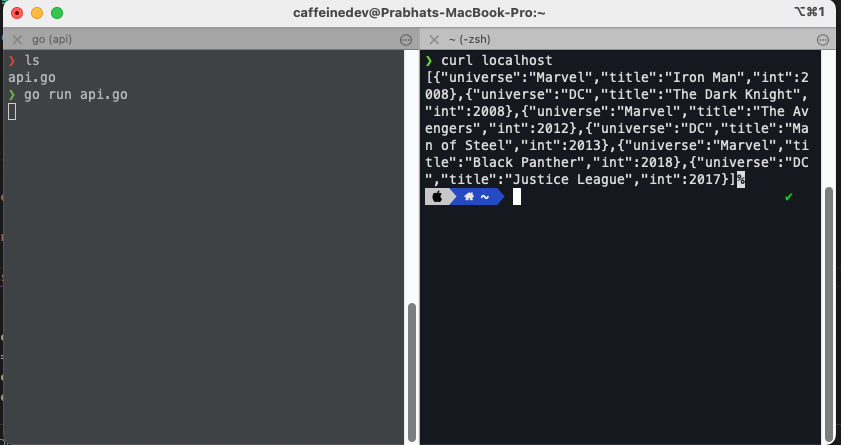

docker-compose basics
Getting started with Docker Compose
NOTE: This isn’t a Docker tutorial. It assumes you to have a basic knowledge of Docker and the problems it solves.
Docker Compose is a tool for defining and managing applications which consist of multiple Docker containers.
To begin with, let’s create some working directories;
mkdir docker_compose_basics
cd docker_compose_basics
mkdir api web
Before we get started on the Docker stuff, we will create two simple applications; an API and a web server. I’ve chosen to write the API in Go and the web server in Node to keep things interesting. All the code is provided so don’t worry if you are unfamiliar with these are technologies.
1) JSON API
1.1) Writing a simple API in Go
Go inside the API directory and create a file named api.go
In this file we will define some structures and hardcode some data. The main function simply listens to the root path on port 80 and returns a JSON response containing all the data in response to all requests.I hardcoded the data in an effort to keep things minimal. By the end of this post you will have the knowledge to enable you to move that data into a real database, also managed by Docker Compose.
package main
import (
"encoding/json"
"log"
"net/http"
)
type director struct {
Name string `json:"name"`
}
type film struct {
Universe string `json:"universe"`
Title string `json:"title"`
Year int `json:"int"`
}
var films = [...]film{
{"Marvel", "Iron Man", 2008},
{"DC", "The Dark Knight", 2008},
{"Marvel", "The Avengers", 2012},
{"DC", "Man of Steel", 2013},
{"Marvel", "Black Panther", 2018},
{"DC", "Justice League", 2017},
}
func main() {
http.HandleFunc("/", func(w http.ResponseWriter, r *http.Request) {
j, _ := json.Marshal(films)
w.Header().Set("Content-Type", "application/json")
w.Write(j)
})
log.Fatal(http.ListenAndServe(":80", nil))
}
Let’s make sure everything works.
go run api.go
and in other terminal run
curl localhost
[{"universe":"Marvel","title":"Iron Man","int":2008},{"universe":"DC","title":"The Dark Knight","int":2008},..
Looks good! If you don’t have goinstalled you can skip this step and trust that it works - you’ll be able to run this code in a minute via Docker anyway.

1.2) Dockerizing the Go API
Create another file in the api directory name Dockerfile.
FROM golang:alpine
WORKDIR /go/src/api
COPY . .
RUN go install -v ./...
CMD ["api"]
This Dockerfile is pretty much as simple. In short we are defining an image using the golang:alpine base image, copying our code and running it.
When your application becomes more complex, fetching dependencies etc, this file will need to reflect those changes.
Ok, let’s try out our container using the Docker cli. Note that we’re mapping the port from 80->8091. I’m not going to explain the other flags passed to these commands, please refer to the documentation.
~ docker build -t docker-compose-basics-api .
~ docker run -p 8091:80/tcp -it --rm docker-compose-basics-api
..
~ curl localhost:8091
[{"universe":"Marvel","title":"Iron Man","int":2008},{"universe":"DC","title":"The Dark Knight","int":2008},..
Great, our container works too.
Now you can be sure the code works if you skipped it the first time. If you’re new to Docker, this demonstrates the power of it. You can run code without installing the specific compiler/runtime 👍.
2) Web server
2.1) Writing a simple web server in Node
Go inside the web directory, create new file named index.js.
const http = require('http')
http.createServer(function(req, res) {
const content = '<p>No films.</p>'
res.writeHead(200, { 'Content-Type': 'text/html' })
res.write(`<html><body><h1>Films</h1>${content}</body></html>`)
res.end()
}).listen(80)
Keeping this simple. This code will create a web server listening on port 80 which will return some HTML.
~ node index.js
..
~ curl localhost
<html><body><h1>Films</h1>No Movies.</body></html>
2.2) Dockerizing the Node web server
Next, create a Dockerfile in the web directory
FROM node:alpine
WORKDIR /docker-compose-basics/web
COPY . .
RUN npm install --prod
CMD ["node", "index.js"]
Let’s run it and make sure it works. Note that this image has a slightly different name and port.
~ docker build -t docker-compose-basics-web .
~ docker run -p 8092:80/tcp --init -it --rm docker-compose-basics-web
..
~ curl localhost:8092
<html><body><h1>Movies</h1><p>No Movies.</p></body></html>
Awesome, this one works too.
3) Creating the Docker Compose file
Finally, we’re here. Create docker-compose.yml in the top level directory docker_compose_bascis.
version: "3"
services:
movies-api:
build: ./api
ports:
- 8091:80
movies-web:
build: ./web
ports:
- 8092:80
depends_on:
- movies-api
That’s it.
We’ve defined two services named movies-api and movies-web. Until now we had to use docker build to build our images. Docker Compose handles this for us, it just needs to be pointed to the directory containing the Dockerfile. We have also exposed our ports as we did previously in docker run.
Also we’ve introduced a new concept; depends_on. This tells Docker Compose that films-web depends on movies-api. This is especially useful when you have many services and databases. Internally this just ensures that the API is started before the web service. It does NOT wait for the API to be ‘ready’, to handle this please read the documentation.
Let’s give it a try… with one simple command;
docker-compose up --build
Awesome, both services are up and running as expected;
~ curl localhost:8091
[{"universe":"Marvel","title":"Iron Man","int":2008},{"universe":"DC","title":"The Dark Knight","int":2008},..
~ curl localhost:8092
<html><body><h1>Movies</h1><p>No Movies.</p></body></html>
You can also run in detached mode by adding the -d flag. Later you can stop it by running docker-compose down.
4) Enabling service communication
We need our web server to fetch the films from the API. Hardcoding IP addresses/host names/ports in our services is far too brittle and error prone.
Fortunately, Docker Compose makes this really easy. Each service joins a common network with the name of the service defined in docker-compose.yml used as the hostname.
Let’s update the web server to talk to the API. Replace index.js with the following code;
const http = require('http')
async function fetch(url) {
return new Promise((resolve, reject) => {
http.get(url, res => {
let data = ''
res.on('data', (chunk) => {
data += chunk
})
res.on('end', () => {
resolve(JSON.parse(data))
})
}).on('error', err => {
reject(err)
})
})
}
http.createServer(async function(req, res){
const movies = await fetch('http://movies-api')
const content = movies
.map(({ universe, title, year }) =>
`${universe} (${title}) - Released on ${year}`)
.reduce((list, str) => `${list}<li>${str}</li>`, '')
res.writeHead(200, { 'Content-Type': 'text/html' })
res.write(`<html><body><h1>Movies</h1><ul>${content}</ul></body></html>`)
res.end()
}).listen(80)
I’ve implemented a naive fetch() function rather than pulling in a dependency - again keeping things simple. You’ll see that we can now refer to the API using the service name defined in the Docker Compose file as the hostname; fetch('http://movies-api').
The result is;
~ docker-compose up --build
..
~ curl localhost:8092
<html><body><h1>Movies</h1><ul><li>Marvel (Iron Man) - Released on 2008 ...
So that’s it. Maybe later on I will write a tutorial for docker-compose with volumes in it.
You can find the code in Github.
If you have any questions, recommendations, or critiques, I can be reached via Twitter or via my mail. Feel free to reach out to me.